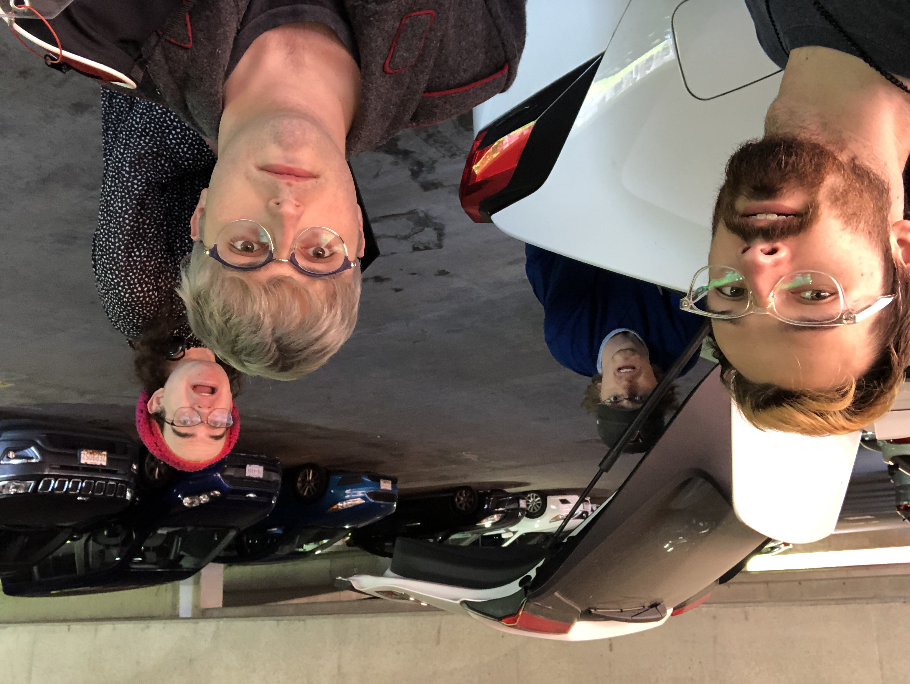
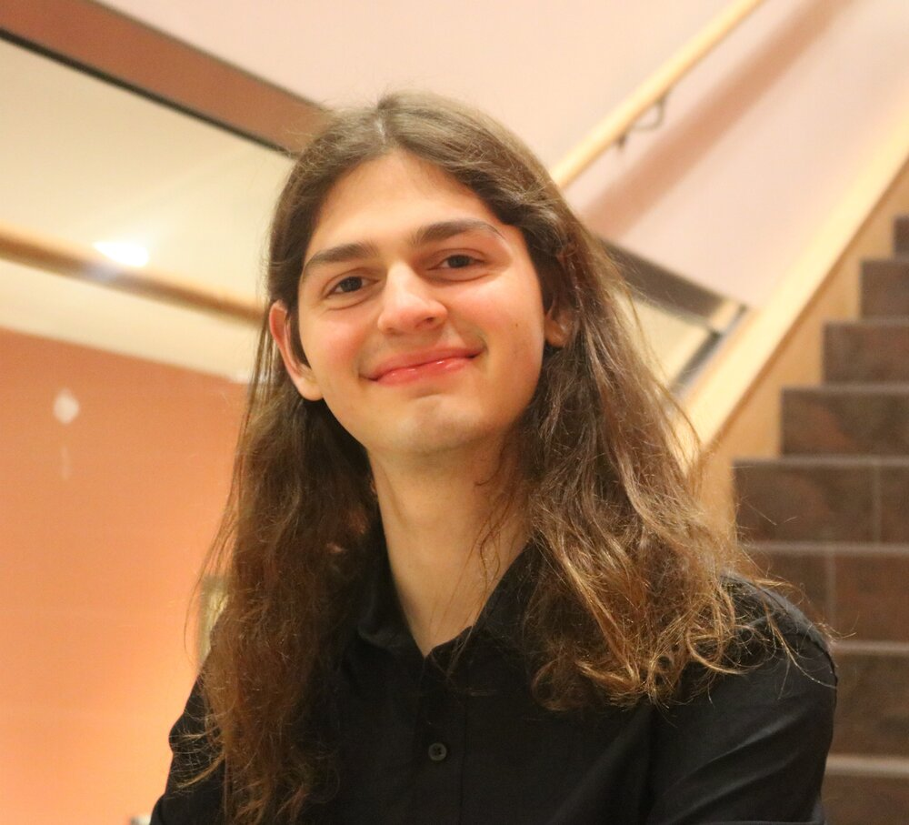

Critical Error
I don't currently have a notion for this one.
Mary Price
Mary Price has studied music since she was 6 playing piano and picking up whatever instruments she could find. She felt inspired by her older siblings who also learned piano and joined middle school ensembles, wanting to walk in their shoes. In middle school, her music experience changed completely when her brother introduced her to composition websites where she began her passion.
Her works have taken to the stage digitally with electronic and electroacoustic works. She composed pieces each year for the Spring electronic concerts. When COVID-19 schools virtual, performance classes struggled to figure out how to perform, so Mary took the role of producer for the Georgia College & State University Wind Symphony and the Georgia College & State University Jazz Ensemble taking students’ homemade recordings and mixing them on her computer.
Mary is currently pursuing her MM in Composition at the Peabody Institute of the Johns Hopkins University, where she is studying under Du Yun. She received a BA in Music Performance at Georgia College & State University, where she studied under Douglass Bassett and Dr. David Johnson.
Cameron Church

Cameron Church is a composer, a performer, and an enthusiast of sound. As a composer, he creates acoustic music, electronic music, and everything in between. As a performer, Cameron is a pianist and percussionist with experience in both traditional and experimental techniques. Cameron specializes in writing for percussion and as a percussionist himself he frequently performs his own compositions. While he loves writing music on his own, Cameron’s favorite part of composing is working with fellow performers and composers where he can engage with other creative minds to make something exciting to perform.
Using his background in mathematics and computer science, Cameron has recently explored what he calls “communication music” which focuses on constructing music out of complex systems of interaction between performers. These pieces are frequently built around multiplayer games but are also sometimes formed entirely around original systems of communication created by Cameron himself. Just like in music, he believes that games and other systems of interaction can tell complex and interesting stories. Through his recent works, he aims to translate these stories onto the musical landscape. While working toward his Master's in Composition under the guidance of Oscar Bettison at the Peabody Institute of The Johns Hopkins University, Cameron hopes to continue exploring communication and game-based music and move it in directions that are new and exciting.
Michael Mills

Michael Mills (b. 1997) composes music that addresses topics of the human condition through an extremely personal lens. Utilizing a unique compositional voice that often mixes contemporary and traditional practices, Michael’s work often explores and embraces the paradox of the universality within shared subjective experiences. Through his music, he asks questions and offers a singular perspective in both an act of and an invitation to reflection. Enthusiastically composing across an immense range of styles, mediums, and skill levels, Michael’s music has garnered performances throughout the American Mid-Atlantic region, on public radio, and across Europe. Notable performances of Michael’s music include the premiere of Adjustments by Popebama, the premiere of Memento Mori by Mariel Roberts and Gregor Schulenburg at the 2019 Valencia International Performance Academy and Festival, and the premiere of Who You Never Knew by Quartetto Indaco at the 2019 highSCORE New Music Festival. Michael is currently earning his M.M. in Composition degree at The Peabody Institute where he studies with Dr. Felipe Lara. He earned his B.A. in Music Composition and Technology along with a minor in Psychology from Virginia Tech in 2019.
Sebastian Suarez-Solis
Sebastian Suarez-Solis is an active sonic and visual artist in the DC/Baltimore area, whose works range from musical compositions to installations and performances. Their works are varied, their artistic philosophy is singular: they seek to disseminate new modes of thought across many art forms, treating all mediums as one vehicle for expression. As such, while their works are undoubtedly musical in their sound, they are visually more suited to the print, the page, or the gallery. With a heavy focus on improvisation and intuitive action, Sebastian often creates works accessible to untrained artists, as in Synchrony: A Symphony of Theatrics (2021).
Their oeuvre is to explore the gamut of human emotion, especially through the lenses of mental health, metaphysics, identity and culture, philosophical arguments, love and sexuality, and power and oppression. “There is, within the minutiae of human behavior, a universality that binds us together that I find so fascinating exploring through artistry.”
As a queer Latinx composer, Sebastian creates representation of systemically excluded peoples and intersections thereof. As well, they often make works inspired by the mental health struggles and unique experiences they would want to see represented and recorded. It is those very struggles they use to derive their musical style – heavy contrast, extreme forms, a reckless abandon. An avid collaborator, Sebastian has worked with ensembles like Mivos Quartet, Estrella Consort, Trio Immersio, TORCH Collective, among other collaborations and individual commissions.
Sebastian is currently pursuing an M.M. in Music Composition at the Peabody Institute of The Johns Hopkins University under the tutelage of Dr. Sky Macklay. They received a B.M. in Music Performance in Percussion from the University of Central Florida, where their primary instructors were Dr. Thad Anderson, Kirk Gay, and Dean of the College of Arts and Humanities Jeffrey Moore.
Andrew FaulkenBerry
Praised by William Bolcom for his “mature tone ... [and] considerable spiritual depth”, Andrew Faulkenberry (b. 1999) is a composer of emotionally evocative works that pose questions about the human experience. His works address topics such as philosophy, communication, the natural world, and art itself.
Faulkenberry’s works have been premiered across the United States. Recently, his orchestra piece Bloodroot—a whimsical depiction of the bloodroot flower, which is both beautiful and toxic—was selected to be premiered by Maestro Keith Lockhart on the Brevard Music Center’s Soloists of Tomorrow concert. In 2019, his American Prize–awarded Symphony No. 1 was premiered in 2019 by the Rutgers Wind Ensemble and subsequently broadcast on WWFM—The Classical Network. At Connecticut Summerfest 2020, members of the International Contemporary Ensemble (ICE) recorded and virtually premiered his Ripples in the Silence, a work contemplating the inherent impermanence of musical performance. Further, the Julius Quartet premiered the March-Serenade movement of his String Quartet as part of the Fall 2020 EMERGE String Quartet Workshop.
In addition to composing, Faulkenberry is fascinated by musical notation and its impact on musical performance. In 2018, he interned with the New Jersey Symphony Orchestra library; this experience informed his belief that musical notation is an art form in itself. Subsequently he has prepared and engraved music for Munson Music Services, Just A Theory Press, and MusicFirst’s PracticeFirst software, working to create scores that visually reflect the meticulousness and artistry with which the work was composed.
Upcoming Performances
Peabody, Cohen-Davis
1st East Mt Vernon Place
10/17/2022, 8:00 PM